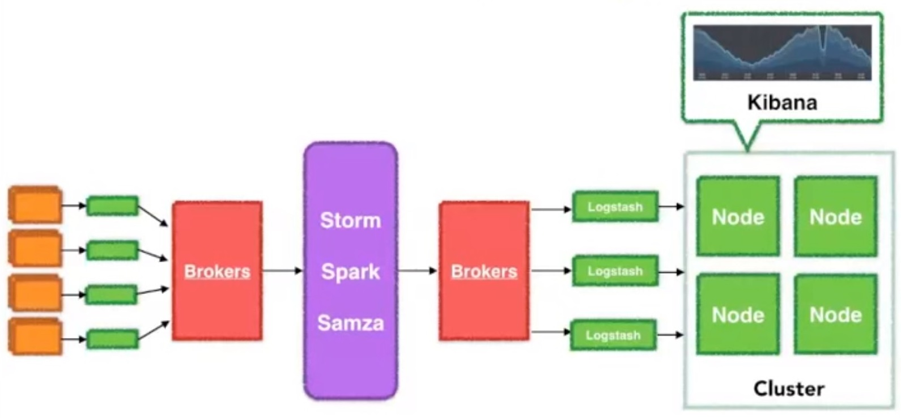

Your browser doesn't support the features required by impress.js, so you
are presented with a simplified version of this presentation.
For the best experience please use the latest Chrome, Safari, or Firefox 10.
Analyse de données

Log - Un lexique de l'écosystème
Inverted index : definition
Machine-generated datas : big data generated by your technology infrastructure, security systems and business application
Operational Intelligence : definition
SIEM : definition
Shipper : definition
Machine-generated datas kesako ?
- Security events
- Security risks and threats
- Network activity, fraudulent activity
- User clickstreams and transactions
- Machine behavior
- Capacity consumption
- Customer experience
- Customer behavior
Machine-generated datas In
Operational Intelligence Out
Turn Machine Data Into Insights
Turn Machine Data Into Insights
Principe d'Architecture

Architecture à scalabilté horizontale

Machine learning à la rescousse


Splunk - La référence
- ...
Splunk - Pros
- Patterns de reconnaissance de logs très performants ex: 100% sur Apache
- Configuration entièrement dans la console web
- Nombreux modèles de données disponible (CIM: Common Information Model)
Splunk - Cons
- Console web pas toujours très intuitive : agregation (sum) difficiles à trouver, fonction avancer comme GeoIP non trouvée
- Trop monolithique
- Prix excessif
Graylog - Présentation
- ...
Graylog - Cons
- pas du tout intuitif
The Elastic Product Portfolio

ELK stack - Pros
- ES très performant, robuste, scalable, très rapide
- Très modulaire, chaque brique adresse une fonction très spécifique, possibilité de réutilisations dans d'autres cas d'utilisation
- Très grande communauté et adoption
- Ecosystème dynamique, nombreux outils autour de ES
- Système très ouvert
- Kibana facile a prendre en main, intuitif
- Des filtres logstash bien pratique : geoip, useragent, faciles à intégrer
- Architecture très scalable et très flexible
- Plage temporelle facile d'accès
ELK stack - Cons
- Patterns groks ne couvrent pas tous les cas ex pour apache ou 5 logs sur 5888 passent au travers à cause d'un problème de parsing
- Difficile de trouver des configurations toutes faites
- Configuration à réaliser soit même
- Configuration manuelle pour la collecte
- Des fonctions sous licence : gestion des accès, gestion des watchers